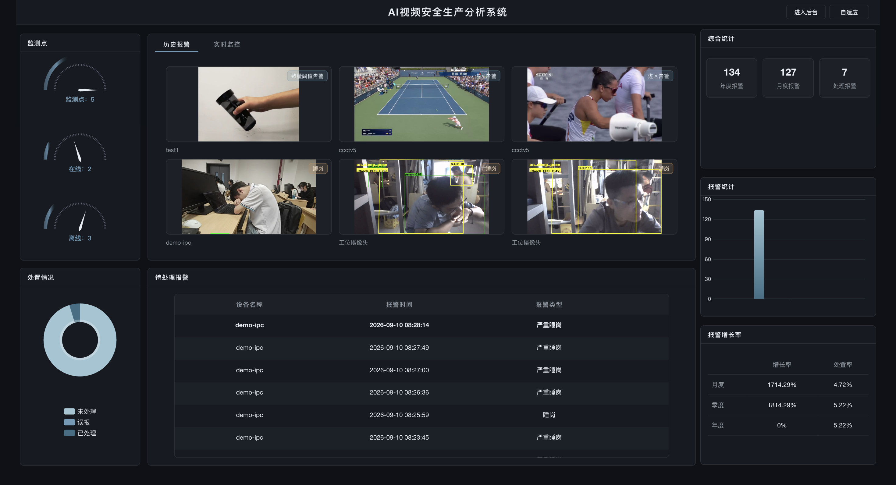
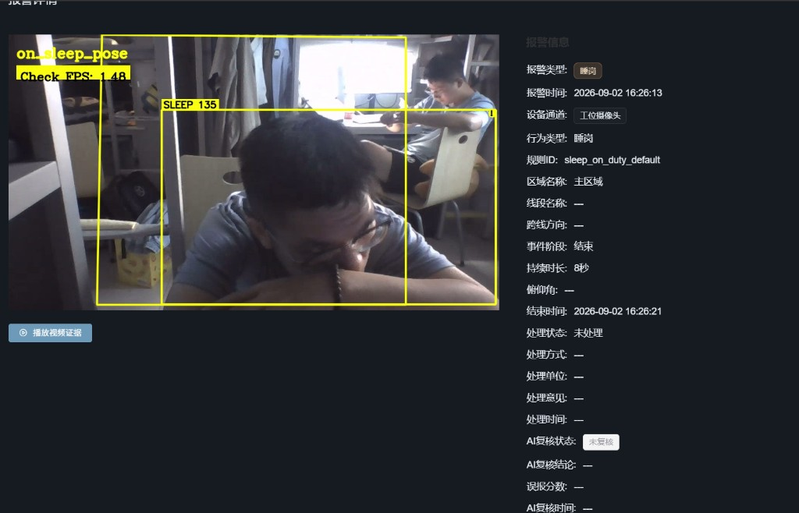
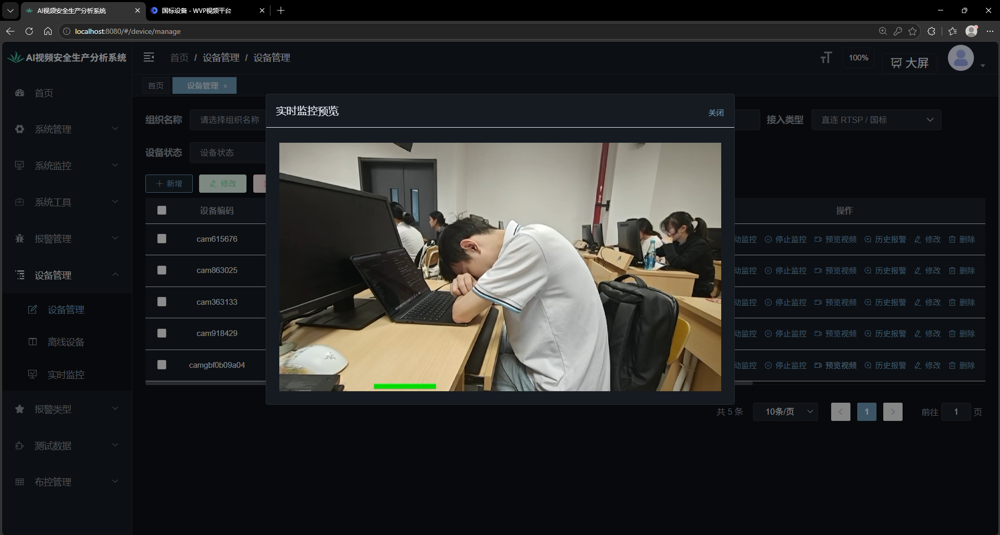

AI 视频安全生产分析系统 · 基于开源 easySVA 的二次开发
P1 原系统跑通 → P2 睡岗检测 → P3 GB28181 国标接入 → P4 双源联调
张柏烁（演示机 · 流媒体 · 国标） 吴佳锴（睡岗算法 · 分析器） 邹子轶（前后端 · 仓库 · 文档）
不重写、不拆原系统：新算法和新设备源都插进原有链路，检测与告警的后半段一次都没改。
场景：值班室、控制室、工位要「有人在岗、没在睡觉」。课程要求在原系统上加睡岗检测，并让国标摄像头接进来。
直连摄像头 → ZLMediaKit → 网页预览 → YOLO 布控 → 告警截图。
这条路通了，后面两件事才有地方「插」。
原系统长什么样

P1 · 原系统在演示机跑通 · 2026-09-01（前端优化后)
上排直连、下排国标。进了 ZLM 之后，往右的一切完全相同 —— 这就是「只换输入」。
检测模型、布控规则、告警入口——全部不变。
变的只有这一个地址。「在线」看注册，「有画面」看点播，两者不是一回事。
趴桌、长时间低头要报；低头看键盘、看手机不能报。
算法代号 on_sleep_pose，插进原 Analyzer，原 YOLO 一行不改。
原系统的 sleep 只看「框不动」，会把这些全报出来——它不是姿态意义上的睡岗。
我们判的是姿态 + 时间，两个都满足才报。正拍、侧拍都要能用。
姿态几何 · YOLO11n-Pose · 17 关键点
● 头点 · ○ 颈点 · 躯干方向 髋→肩 · 无髋时用肩线转 90°
时长分档 + 五道证据门
低头 ≥ 32° 进入、抬头 < 22° 恢复（滞回防抖）；时长只决定档位（2 s / 5 s / 15 s），报不报还要五道门全过。

P2 · 告警详情：「睡岗」徽章 · 持续时长 · 俯仰角 · 证据视频
国标摄像头（或模拟器）注册进平台，
与直连设备同一张设备表、同一条检测与告警链路。
演示机的 ZLM 没有内置 SIP 服务端，只能收 RTP、转封装 —— 拆开后每个组件只做一件事，业务改动最小。
自研国标协议模拟器 gb28181_sim.py

P3 · 设备管理 → 国标 demo-ipc「预览视频」：真人工位画面经 Nginx /rtp/ 播出
演示机一键起栈 start_demo.ps1 -WithGbSim，开机自检 check_demo_stack.sh ‑‑dual-sleep 自动探测两类源；2026-09-08 四个验收点全部关账。
创新：不自研 SIP 的国标三拆 · 真 SIP 模拟器 · 几何俯仰角 + 三档时序 + 质量分 · 双源同一套公式
优化：预览可看可局域网 · 告警可讲可复核 · 验证与演示可复现
质量分 0–100 · 四项加权，回答「证据有多硬」—— 只用于排序，不参与报不报
全部叠在原来的 h_waring 表和告警目录上：三连图落磁盘经 Nginx /alarm/ 读、AI 结论进独立表、通知本身不落库。
预览：从「本机能看」到「谁都能看」
代码：web/src/utils/flvPlayer.js · scripts/start_wvp.sh（HOOK_WVP）· HDeviceServiceImpl.previewMonitor
把「我们测过了」变成数
统计与健康度接口现算不落库；前端暂无独立图表页，答辩用接口 JSON 演示。
顺带三句要分开说：注册成功 ≠ 业务页有设备（还没同步）；有设备 ≠ 有画面（还没点播）；WVP 网页能播 ≠ 业务页能播（两条播放器不是一条路）。
交付：可运行演示机、GitHub 仓库、评委使用手册、启动手册、国标说明书、算法说明。
大屏 → 设备管理（直连行 + 国标 demo-ipc 行）→ 同步国标设备 → demo-ipc「预览视频」→ 布控「睡岗检测」→ 真人趴桌：SLEEP? → SLEEP → SLEEP! → 报警详情：档位、质量分、三连图、证据视频